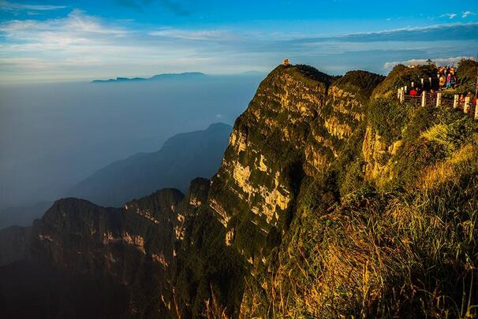
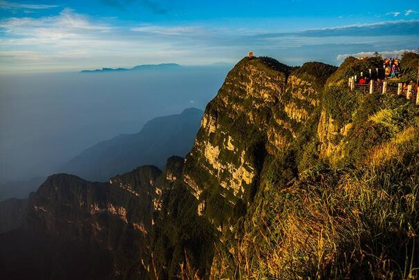

morly旅游圈
峨眉山（Mount Emei）位于中国四川省乐山市峨眉山市境内，是中国“四大佛教名山”之一，地势陡峭，风景秀丽，素有“峨眉天下秀”之称，山上的万佛顶最高，海拔3099米，高出峨眉平原2700多米。《峨眉郡志》云：“云鬘凝翠，鬒黛遥妆，真如螓首蛾眉，细而长，美而艳也，故名峨眉山。峨眉山（Mount Emei）位于中国四川省乐山市峨眉山市境内，是中国“四大佛教名山”之一，地势陡峭，风景秀丽，素有“峨眉天下秀”之称，山上的万佛顶最高，海拔3099米，高出峨眉平原2700多米。《峨眉郡志》云：“云鬘凝翠，鬒黛遥妆，真如螓首蛾眉，细而长，美而艳也，故名峨眉山。
乐山大佛雄伟壮观，背后的故事却让人潸然泪下，古人的智慧与锲而不舍的精神让人叹为观止，大佛脚下的三江波涛滚滚不舍昼夜，赋予这个地方上善若水任方圆的绝美花卷。
离此处不远便是峨眉山。古来文人墨客的描绘和佛教渊源，古老的传说给她披上一层神秘的面纱。从山脚山腰有一个小时的车程，足见峨眉的雄伟。一路上雾气氤氲，缕缕青烟，各种不知名的植物郁郁葱葱，仔细听还有远处寺院的悠悠钟声回荡。
这里可以欣赏峨眉全景，恍若到了另外一个世界。顿然开阔，云海茫茫，白浪滚滚，缥缈多变，天空湛蓝，灵岩叠翠，微风习习，古松苍劲，秋草簌簌，与世隔绝，恍若天上行走。阳光下的金顶更是熠熠生辉，古朴庄重。普贤菩萨的金像流光溢彩，佛光普照，想必这就是天上的琼楼玉阁，一切静谧而又庄严，多说一个字都是打扰。
第1天:成都-峨眉山金顶-峨眉
成都三环内小车包接到统一指定集合点享用独家定制专属肯德基暖胃早餐。乘坐【灵猴主题艺术巴士】，献【灵猴吉祥伴手礼】，愉悦的开启乐山峨眉之旅。从成都乘车出发前往峨眉山景区（由于旺季车辆和游客较多，可能会出现堵车等现象，为保证中午用餐时间，抵达国家5A 级景区、世界自然与文化双遗产【峨眉山风景区】（游览时间约6 小时），换乘观光车从黄湾站出发，沿途皆为山路，可能会出现颠簸不适；下车后是今天第一段山路，满眼是绿色的植被和粉红的杜鹃花。抵达雷洞坪享用特别定制【美味野宴】（用餐时间约30 分钟），峨眉山是植物的王国，当地的野菜既是佳蔬，又是良药，且风味独特、营养价值高，可谓野菜中的极品。我们精选每一味野菜，让您放心享受大自然的恩惠。约12：30：餐后向峨眉主峰【金顶】出发，此为峨眉山精华所在，朝拜高48 米的十方四面佛，参观金、银、铜殿和舍身崖，这里离天空最近，礼佛也最灵。根据天气情况，有缘人还可能观赏到佛光、圣灯、云海等奇观。约16：00 前往佛教协会所在地，峨眉山开山第一寺，也是许愿最灵验的地方【报国寺】（游览时间约30 分钟），后前往宽有非遗窄有美食之称的峨眉象城，参观众多景点如：象象如意雕塑、朝圣起点牌坊、迎宾大象、象象如意葫芦水景、六象智慧照壁、象王朝圣、大象穿墙、大象求婚、大象邮差、群象戏水等、非遗文化天空之幕、全家福姻缘墙拍照点等，夜间能欣赏到巨资打造的世界级原创场景灯光秀，各灯光主题，灯光颜色，场景随各自的主题变化，美幻绝伦，场景震撼，后漫步峨眉象城美食街，享用独家灵猴主题宴，晚餐后赠送参观象城大剧院盛大演出《圣象峨眉》川剧变脸，皮筋滚灯，吐火，峨眉武术，普贤菩萨行愿，峨眉十景，蝶舞、柔术、茶韵、圣象、禅韵等，让你感受佛国仙山的文化魅力，晚会结束后前往峨眉山市区酒店入住休息。
友情提示：赠送项目不参加不退费用不等价交换，因旺季景区排队影响行程时间等不确定因素，赠送项目导游可根据时间自由安排或征求客人意见后可放弃赠送景区游览；
第2天:峨眉山-乐山- 成都
约08：00 左右在酒店享用早餐,用餐时间约30 分钟，约08：30：出发前往国家AAA 级旅游景区【天工开物水晶博物馆】，博物馆天然水晶收藏、研究、展示为一体的专题性博物馆，也是全球唯一的、最大的以天然水晶结合佛教文化为主题的博物馆。（游览时间约120 分钟含天工自助餐时间），景区全方位地展示了水晶的孕育、生长、形成以及雕刻大师们的艺术构思。馆内独特的场景，无论是地球之心的建筑轮廓，佛祖修炼的洞穴，佛陀顿悟的菩提树，五彩的星座神话，神秘的弥勒世界，全部采用稀有的水晶宝石去演绎。游客通过视觉的感受和心灵的体验，在神奇水晶能量的时空隧道中收获一场健康和好运之旅。后在博物馆自助餐厅享用特色乐山美食，中餐后出发前往【国家4A 级景区古蜀乌木遗址博物馆】（游览时间约1 个半小时），该景区以乌木遗址发掘，乌木艺术雕刻为主的专题性博物馆并以传承古嘉州遗产、发扬古嘉州精神、保存古嘉州精髓为宗旨，以推广古嘉州文化为己任并为古嘉州与友好国家的文化交流提供平台，参观泰国皇家乳胶（约90 分钟），后前往国家5A级景区【乐山大佛】（游览时间约3 小时），景区在岷江、大渡河、青衣江三江交汇处，与乐山城隔江相望。著名的大佛是一尊71 米的摩崖石刻造像，被诗人誉为“山是一尊佛，佛是一座山”，十分壮观，我们为您留足了下佛脚的时间，让您玩得畅快。后赠送参观【紫霞宫】（紫霞宫为乐山道教协会所在地，是道教西派祖庭，游客朋友将在紫霞宫亲耳聆听道教经韵，亲身参与道教科仪。时间约一个半小时）结束后启程返回成都结束愉快的行程。友情提示：由于旺季可能栈道排队，为节约时间，征求客人意见后，乐山可选择船游乐山，观大佛全貌！游览期间在景区里购物场所沿途有各种农家摊点，以及景区内的购物场所属于景区自行商业行为，均不属于我社安排购物店！ 古蜀乌木遗址博物馆】（游览时间约1 个半小时），该景区以乌木遗址发掘，乌木艺术雕刻为主的专题性博物馆并以传承古嘉州遗产、发扬古嘉州精神、保存古嘉州精髓为宗旨，以推广古嘉州文化为己任并为古嘉州与友好国家的文化交流提供平台，参观泰国皇家乳胶（约90 分钟），后前往国家5A级景区【乐山大佛】（游览时间约3 小时），景区在岷江、大渡河、青衣江三江交汇处，与乐山城隔江相望。著名的大佛是一尊71 米的摩崖石刻造像，被诗人誉为“山是一尊佛，佛是一座山”，十分壮观，我们为您留足了下佛脚的时间，让您玩得畅快。后赠送参观【紫霞宫】（紫霞宫为乐山道教协会所在地，是道教西派祖庭，游客朋友将在紫霞宫亲耳聆听道教经韵，亲身参与道教科仪。时间约一 个半小时）结束后启程返回成都结束愉快的行程。
友情提示：由于旺季可能栈道排队，为节约时间，征求客人意见后，乐山可选择船游乐山，观大佛全貌！游览期间 在景区里购物场所沿途有各种农家摊点，以及景区内的购物场所属于景区自行商业行为，均不属于我社安排购物店！ 购买请索要发票！
内容整理至网络，如有侵权，请联系我们！1255394075@qq.com
.jpg)
.jpg)
.jpg) 
